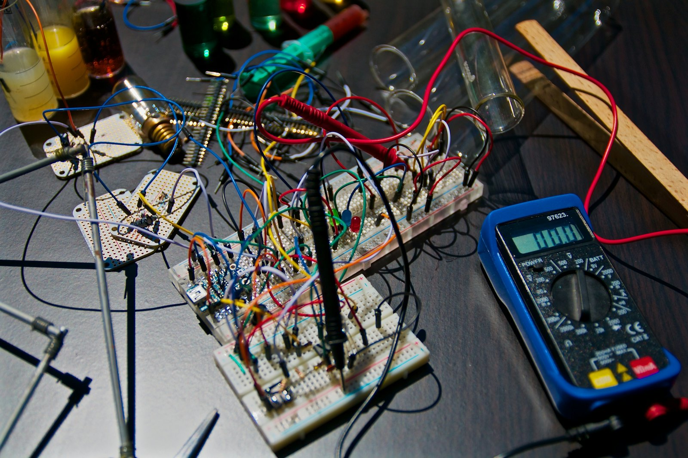
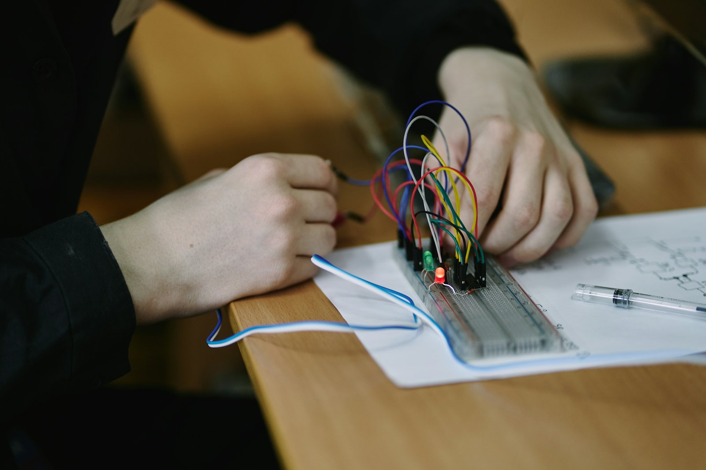

Investigação & inovação
Imaginar respostas tecnológicas inéditas às falhas atuais.
Associação de investigação · Suíça
3CH0 é uma associação suíça de investigação e desenvolvimento. SentrIQ é o seu primeiro projeto.
das vítimas sofrem violência psicológica e controlo coercivo
das vítimas na Suíça são mulheres
mulheres sofre ciberviolência
de vigilância tecnológica e jurídica
01 — Missão
Colocamos a segurança das pessoas e a validade jurídica das provas no centro de cada investigação.
Imaginar respostas tecnológicas inéditas às falhas atuais.
Ferramentas centradas exclusivamente na segurança das pessoas vulneráveis.
Cibersegurança e proteção de dados integradas desde a conceção.
Garantir a validade jurídica e a utilidade das provas.
02 — O problema
76,8 % das vítimas sofrem controlo coercivo por parte de uma pessoa próxima.
Serviço Federal de Estatística, 2023 · estatísticas sobre a violência doméstica
O controlo coercivo não se combate numa única frente. Cruzam-se três desafios, e nenhum se resolve isoladamente.
As ferramentas digitais e os telemóveis são explorados para vigiar, o que dificulta consideravelmente o acesso das vítimas à ajuda.
A resposta deve cruzar proteção física imediata, cibersegurança das comunicações e preservação da integridade das provas.
Tornou-se indispensável uma sinergia estrita entre profissionais de terreno, tecnólogos e forças da ordem.
03 — A plataforma
A associação funciona como uma plataforma de investigação e inovação contínua. Os projetos têm vocação para evoluir e multiplicar-se.
O nosso primeiro projeto de I&D: alertar e preservar provas face às vulnerabilidades dos telemóveis. Em fase de exploração.
Novas soluções adaptadas à evolução do controlo coercivo e às necessidades identificadas no terreno.
Antecipação contínua dos novos riscos tecnológicos e sociais.
Não construímos um produto. A inovação não se limita a uma única ferramenta: evolui permanentemente com as necessidades do terreno e as novas ameaças. A 3CH0 é uma estrutura permanente dedicada a essa antecipação.
04 — Primeiro projeto
As soluções de emergência atuais assentam quase exclusivamente no telefone pessoal da vítima. É precisamente o objeto que o agressor controla.
Exigem desbloquear o telemóvel — impossível sob coação.
Dependem do telemóvel por perto, frequentemente confiscado.
Perigosas de acionar, manipuláveis, juridicamente frágeis.
Objetos identificáveis, vulneráveis à destruição física.
Conceber um alerta altamente resiliente e totalmente discreto, independente dos dispositivos pessoais.
Estabelecer uma comunicação que não dependa exclusivamente do telemóvel, e que sobreviva à sua perda.
Explorar a segurança, a marcação temporal e a conservação das provas para garantir a sua admissibilidade.
05 — Âmbito
A 3CH0 concentra-se exclusivamente nas fases iniciais do ciclo de inovação. É isso que garante a sua independência.
As necessidades vitais do terreno, definidas com os especialistas e as associações.
Investigação interdisciplinar para conceber modelos de proteção inéditos.
Protótipos funcionais para testar e validar as hipóteses tecnológicas.
Validação científica, seguida da preparação das implementações-piloto no terreno.
Para além desta etapa, a produção e a implementação passam para parceiros: acordos de licenciamento, ou entidade comercial dedicada.

06 — Repartição de papéis
A 3CH0 mantém a liderança na inovação; o parceiro conduz a colocação no mercado. A estrutura comercial não substitui a associação.
| Etapa | 3CH0 — associação | Parceiro comercial |
|---|---|---|
| Fase inicial | Investigação de vulnerabilidades, inovação, conceção de novos modelos de proteção. | — |
| Prototipagem | Desenvolvimento técnico e de software, primeiras versões funcionais. | — |
| Validação | Testes de terreno, provas de conceito, gestão da propriedade intelectual. | — |
| Escalabilidade | — | Produção, industrialização, comercialização, distribuição. |
| Terreno | — | Instalação, manutenção e apoio contínuo. |

07 — Ecossistema
Quatro famílias de especialização, coordenadas em torno da plataforma.
Associações, centros de apoio à vítima (LAVI), psicólogos e juristas especializados.
Investigação aplicada: especialização em redes e segurança, engenharia de hardware e forense digital.
Empresas e especialistas que garantem a integridade dos dados.
Forças da ordem e autoridades cantonais, para uma coordenação operacional.
08 — Amanhã
A investigação expande-se para antecipar as novas formas de violência e de controlo coercivo.
Identificar os sinais fracos e os padrões de abuso antes da escalada da violência.
Reforço contínuo da integridade, da marcação temporal e da conservação dos dados.
Investigação sobre os novos métodos de vigilância, os stalkerwares e o desvio de dispositivos conectados.
09 — Agir
Investigadores, engenheiros, juristas, associações, instituições, fundações: a plataforma avança com quem quer que os factos contem.